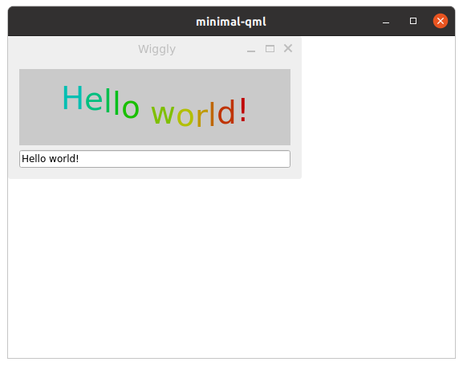

Minimal QML
Minimal QML is a simple example that demonstrates how to write a Wayland compositor in QML.
Minimal QML is a desktop-style Wayland compositor example implementing a complete Qt Wayland Compositor with as little code as possible. The compositor is implemented with Qt Quick and QML.

The WaylandCompositor Object
The top-level item of the compositor is a WaylandCompositor. This represents the Wayland server itself and manages the connections to clients as they come in.
WaylandCompositor {
By default, the server supports the core Wayland protocol for communicating with clients. Usually, though, you will also want to support one or more extensions to the protocol. This gives the client more tools to influence its role in the windowing system.
Qt supports several standard and common extensions. In addition, it is easy to create and support custom extensions, as long as support can be added in both the client and server code.
Shell Extensions
Typically, a compositor will support at least one shell extension. Extensions are added to the compositor by instantiating them as direct children of the WaylandCompositor object. They will automatically be added to its extensions property and broadcast to clients when they connect.
WlShell { onWlShellSurfaceCreated: (shellSurface) => shellSurfaces.append({shellSurface: shellSurface}); } XdgShell { onToplevelCreated: (toplevel, xdgSurface) => shellSurfaces.append({shellSurface: xdgSurface}); } IviApplication { onIviSurfaceCreated: (iviSurface) => shellSurfaces.append({shellSurface: iviSurface}); }
The Minimal QML example supports three different shells: WlShell, XdgShell and IviApplication.
A client can connect to either of these and it will be used as a channel for communicating about certain things between the client and compositor, such as creating new windows, negotiating size, and so on.
When a client creates a new surface, its active extension will receive a signal of this. The signal contains a ShellSurface argument. Depending on which extension received the signal, this argument will be of a subclass of ShellSurface: WlShellSurface, XdgSurface or IviSurface respectively.
The ShellSurface can be used to access features of the shell extension for the specific surface. In the Minimal QML example, we simply want to add the client to our scene. To record existence of the new window, we add it to a simple ListModel for safe-keeping.
ListModel { id: shellSurfaces }
Creating the Scene
Most of the necessary compositor code is already ready. The final step is to make sure applications are actually visible on the screen.
For all compositors, we have to define at least one output. This is done by instantiating a WaylandOutput object as the direct child of the WaylandCompositor. If there is only a single output, this will represent the primary screen on the system. (You may also create multiple WaylandOutput objects to address multiple screens if they are available. See the Multi Screen example for more details about this.)
WaylandOutput { sizeFollowsWindow: true window: Window { width: 1024 height: 768 visible: true
Inside the WaylandOutput, we create a Window that serves as the container for our scene. In the example, we give this a size. The size used if the compositor is running as an application inside another windowing system which supports custom-sized windows. In a typical use case on an embedded device, where the compositor is the only display server running, it will probably be running on a full-screen platform plugin (such as eglfs) and the size set here will not matter.
The final step is to create items for each of the ShellSurface objects that have been created. For this, we can use the ShellSurfaceItem class.
Repeater { model: shellSurfaces // ShellSurfaceItem handles displaying a shell surface. // It has implementations for things like interactive // resize/move, and forwarding of mouse and keyboard // events to the client process. ShellSurfaceItem { shellSurface: modelData onSurfaceDestroyed: shellSurfaces.remove(index) } }
We create a ShellSurfaceItem for each of the shell surfaces in our model, and assign them to the shellSurface property. In addition, we make sure the model is updated when the shell surface is destroyed. This can happen when a client manually closes a window, and if it exits or crashes.
And this is all the code needed to create a functional Wayland compositor using Qt Quick and QML. For another example of a compositor written in QML but which has a few more features, take a look at the Fancy Compositor example.